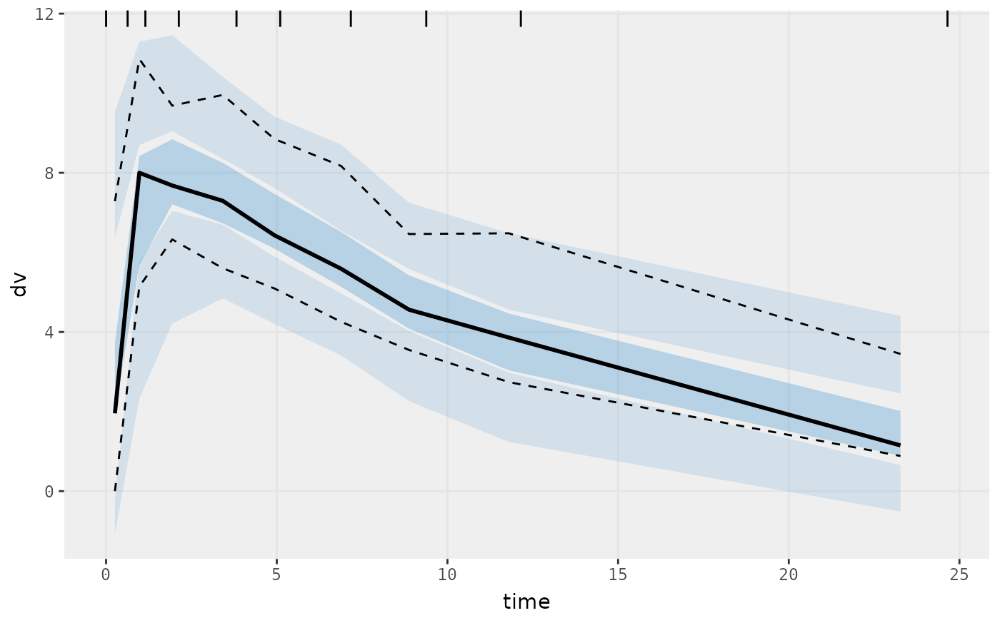

VPC based on ui model
Arguments
- ...
Additional arguments passed to
nlmixr2plot::vpcPlotTad().- idv
Name of independent variable. For
vpcPlot()andvpcCens()the default is"time"forvpcPlotTad()andvpcCensTad()this is"tad"
Examples
# \donttest{
one.cmt <- function() {
ini({
tka <- 0.45; label("Ka")
tcl <- log(c(0, 2.7, 100)); label("Cl")
tv <- 3.45; label("V")
eta.ka ~ 0.6
eta.cl ~ 0.3
eta.v ~ 0.1
add.sd <- 0.7; label("Additive residual error")
})
model({
ka <- exp(tka + eta.ka)
cl <- exp(tcl + eta.cl)
v <- exp(tv + eta.v)
linCmt() ~ add(add.sd)
})
}
fit <-
nlmixr2est::nlmixr(
one.cmt,
data = nlmixr2data::theo_sd,
est = "saem",
control = list(print = 0)
)
#>
#>
#>
#>
#>
#>
#> → loading into symengine environment...
#> → pruning branches (`if`/`else`) of saem model...
#> ✔ done
#> → finding duplicate expressions in saem model...
#> ✔ done
#> ℹ calculate uninformed etas
#> ℹ done
#> Calculating covariance matrix
#> → loading into symengine environment...
#> → pruning branches (`if`/`else`) of saem model...
#> ✔ done
#> → finding duplicate expressions in saem predOnly model 0...
#> → finding duplicate expressions in saem predOnly model 1...
#> → finding duplicate expressions in saem predOnly model 2...
#> ✔ done
#>
#>
#> → Calculating residuals/tables
#> ✔ done
#> → compress origData in nlmixr2 object, save 5952
#> → compress phiM in nlmixr2 object, save 63664
#> → compress parHistData in nlmixr2 object, save 13816
#> → compress saem0 in nlmixr2 object, save 26728
vpcPlot(fit)
#>
#>

# }